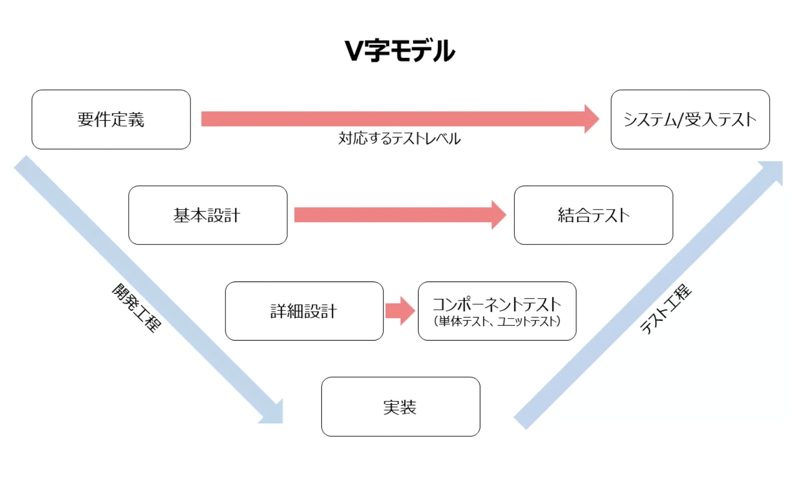

目次
- V字モデルとは・・・・・・・・・・・・・・・⇨
- 要求定義とは・・・・・・・・・・・・・・・・⇨
- 要件定義とは・・・・・・・・・・・・・・・・⇨
- 基本設計とは・・・・・・・・・・・・・・・・⇨
- 詳細設計とは・・・・・・・・・・・・・・・・⇨
V字モデル
V字モデル（Vモデル・V-Model）とは
V字モデルとはソフトウェア開発手法の１つであり、主にウォーターフォール型開発において開発工程とテスト工程を詳細さのレベルに応じて対に並べ、各工程の対応関係を明示したモデルです。
V字モデルを活用する品質面におけるメリット
１．適切なテスト内容を決定しやすい
２．テスト工程の進捗を管理しやすい
３．前工程の修正作業など「手戻り」リスクの軽減につながる
４．不具合の修正コストの削減につながる
要求定義とは
開発するシステムに求める依頼側の要求・機能をまとめたもの。

・現状の課題（何に困っているのか）
・理想の状態（どうなれば解決するのか）
・システム機能（どんな機能があれば良いのか）
例えば「○名が同時にアクセスして××を1秒以内に並列処理できるシステム」「○○ボタンをクリックすると、××と△△を処理できる機能」といった概要を決定します。
要求定義に対応する受け入れテストとは、最終的に納品されるシステム（プログラム）が、要求定義を満たしているのか？依頼側のユーザーが確認するためのテストです。
要件定義とは
クライアントのニーズである要求定義を、開発するシステムでどのように実現していくか？必要な要件をまとめたもの。

・開発目的
・予算
・必要な機能
・スケジュール（納期）
・必要な人員（工数）
手順書
1.ページ毎にやりたいことをスプシに書き出す。合計100個

ページ名の行には書き込まない(後でフォーマットが崩れる)
2.作成したやりたいことをコピーして"Xmaind"にペースト
3.Xmaindでページの階層とコンポーネント毎に並び替え

4.XmaindでMVPを見える化
初期開発では実装しないものの色をグレーに変更してタグを折りたたんで見やすくする
5.ワイヤーフレームを作成(単体画面の設計図)
ワイヤーフレームとは、webページのレイアウトを定める設計図のことです。
Xmaindで作成した要素をFigmaで配置し、具体化する

フロントにデザインを一任するなら色、形、画像はここでは入れない
Google Analyticsを連携する場合に守ること
1.マテリアルデザインを採用する
iOSやAndroidアプリ開発のGoodPractice
2.アンチパターンの確認
6.サイトマップを作成(アプリ全体の設計図)
サイトマップとは、サイト全体のページ構成を地図のように一覧で記載しているページのことです。

PV数を稼ぎたいなら回遊率を上げる設計にする
PVとは、Webサイトで表示されたページの閲覧数を指しています。Webサイト全体や特定のページがどれくらいユーザーに閲覧されたのかを知る指標で、ユーザーが特定のページを閲覧した回数を知ることができます。
PVのカウントの仕方は非常にシンプルで、Webサイトにアクセスしたユーザーが1ページを閲覧するごとにPVがカウントされ、3ページ見た場合は3PVです。また、ページの更新や「戻る」ボタンによって前ページに戻った場合もカウントに入ります。
7.選定項目の決定
・技術選定(言語)
・サーバー選定
・DB選定
プロジェクトが急ぎの場合はここまで終わればコードが書ける
8.ガントチャートの作成
ガントチャート（Gantt chart）とは、プロジェクト管理や生産管理などで工程管理に用いられる表のことです。

基本設計とは
要件定義をもとに、UI（ユーザーインターフェース）などの外側から見たシステムを設計する,内部のシステムを設計するフェーズで、基本設計で行う作業内容は以下の通りです。
機能の洗い出し、詳細決定

実際に作る時に必要なシステムの詳細を決める。例:アーカイブを難易度順に10個表示
function毎にプログラムの実際の処理の流れ、プログラムで扱うデータや流れを決める
扱うデータを整理
1.必要なデータをリスト化する

2.tableに落とし込み
3.データフロー図の作成
4.各画面毎にDBから表示されるデータと、DBに送信するデータの見える化
画面のレイアウトを決める

アニメーション、ボタンを押した時の挙動、リンク、メニューの中身、ページのタイトル、文字の配置、アイコンの配置などを決定！
メインカラー、サブカラー、フォントカラー、アクセントカラーの決定！
詳細設計
詳細設計とは、システム開発における工程のひとつとなっており、基本設計の後に行うことが一般的となっており、橋渡し的な存在になっています。基本設計で大まかに考えた概要をもとにして、実際のプログラム制作の部分まで細かく策定するのが詳細設計の役割です。
基本設計までで決めていない項目を全て決定する！
決定項目一覧
Figmaで作成
・画像
・アイコン
・ロゴ
・要素の配置
・マテリアルデザインの採用
・アンチパターンの確認
テキストや図で作成
・テーブルの結合
・要素のサイズ
・データの型
・フォント
・ファビコン
・headの中身
・日付の表記
・formのバリデーション(文字数制限など)
・文字のサイズ(px)
・処理の発火タイミング(サーバー処理)
コーディング
readmeに記述するもの一覧
プロジェクト名 言語 技術 バージョン 実装方法 作った経緯 デプロイ方法（環境） 使い方(ユーザー目線)
いいコードの書き方
コードの共通化 機能をコピペで増やさない アプリ全体でコードの共通化(やりながら見極める) オブジェクト指向など UIロジックのビュー
コードの分離
ビジネスロジックとUIロジックを混ぜない オブジェクト思考の知識が必要 依存関係の注入
こまめなリファクタリング
継続的にリファクタリングして共通化、分離か指定く 慣れてくると慣れてくるとリファクタリングしながらコードが書ける テストを大事にする 単体テスト 結合テスト 総合テスト 負荷をかけるテスト ＊コード依存関係を把握するとテストしやすい
キュー
frontendパフォーマンス改善
グーグルライトハウスを使う ライトハウスCI